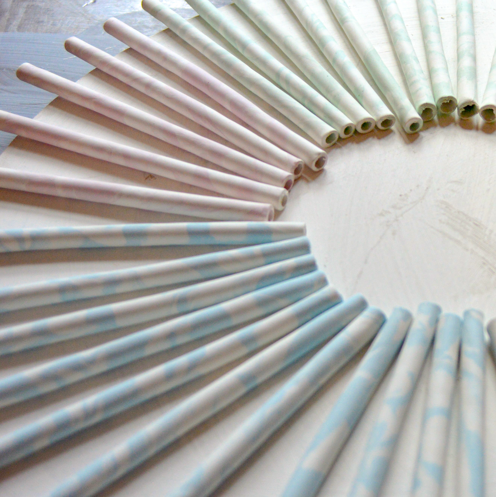

a project
Frida Ceramics
In this project we helped Frida ceramics, which is a small company that makes ceramic straws. The main mission for this project was to create a clear visual identity and an inspiring and informative website for Frida Ceramics.
The issue for the project was: How can Frida Ceramics visualize the company on the market and therefore expand her vision of reminding the consumer about making more sustainable choices in their everyday life. When the company don’t have a clear visual identity or a website, how does Frida Ceramics then reach her audience and maintain her spot at the market in a world that is depending on a sustainable trend.
In this project my main role was web development, maintaining all html, CSS and JavaScript. We worked in a group of four students, in which we took all the decisions within the concept and design together.
Wanna to see?
